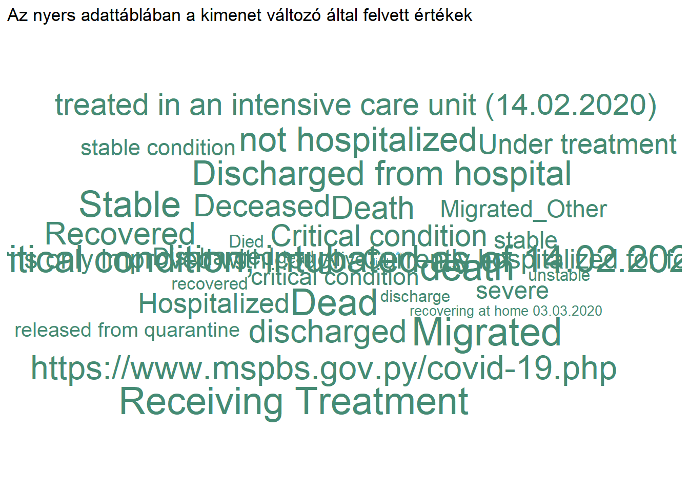

Döntési fa
Az egyik talán legfontosabb kérdés a járványügyben, hogy mennyire halálos a vírus. Már a megjelenésekor nagyon hamar ismertté vált a tény: elsősorban az idősekre és krónikus betegre jelent kockázatot. Ennek a ténynek empirikus teszteléséhez olyan adattáblára van szükségünk, melyben rögzítésre kerülnek a megfertőzöttek demográfiai adatai és az eset végső kimenete (ezt a fajta adattípust nevezik “line list”-nek).
Adatok bemutatása
Forrás
A fentebb leírt célra lett létrehozva egy nyílt projekt1, amely során ezeket az adatokat több országra gyűjtik ki és teszi online elérhetővé.
Az adattábla összesen 2676311 megfigyelést tartalmaz 33 változóval. Azonban a változók jelentős része használhatatlan elemzésre és jelentős mértékben van szükség az adatok tisztítására is. Egyetlen példa említéseként a kimenetben nem egyszerűen died vagy elhunyt szerepelt, hanem annak számos szinonímája is, amelett, hogy sok esetben nincs elérhető adat.
set.seed(1)
dat %>%
count(outcome) %>%
na.omit() %>%
{mutate(., s = runif(n = nrow(.)))} %>%
ggplot(aes(label = outcome, size = s)) +
geom_text_wordcloud(color = 'aquamarine4') +
scale_size_area(max_size = 10) +
labs(title = "Az nyers adattáblában a kimenet változó által felvett értékek") +
theme_minimal()
Adatok elemzéshez való előkészítése
Az adatok megtiszítása előtt el kell döntenünk, hogy mely változókkal is érdemes foglalkozni, mivel sajnos számos változó esetében hiányzik rengeteg sor a táblában.
dat %>%
apply(2, function(x) sum(is.na(x))) %>%
{data.frame(var = names(.), nobs = nrow(dat)-., robs = (nrow(dat)-.)/nrow(dat))} %>%
set_names('var', 'Hiánytalan adatok száma', 'Hiánytalanok aránya') %>%
gt(
rowname_col = "var"
) %>%
fmt_percent(
columns = vars('Hiánytalanok aránya'),
dec_mark = ','
) %>%
tab_header(title = 'Adattáblában lévő hiánytalan megfigyelések aránya')| Adattáblában lévő hiánytalan megfigyelések aránya | ||
|---|---|---|
| Hiánytalan adatok száma | Hiánytalanok aránya | |
| ID | 2676311 | 100,00% |
| age | 578018 | 21,60% |
| sex | 580157 | 21,68% |
| city | 1698630 | 63,47% |
| province | 2223647 | 83,09% |
| country | 2676196 | 100,00% |
| latitude | 2676250 | 100,00% |
| longitude | 2676250 | 100,00% |
| geo_resolution | 2676250 | 100,00% |
| date_onset_symptoms | 261599 | 9,77% |
| date_admission_hospital | 116211 | 4,34% |
| date_confirmation | 2567822 | 95,95% |
| symptoms | 0 | 0,00% |
| lives_in_Wuhan | 0 | 0,00% |
| travel_history_dates | 2611 | 0,10% |
| travel_history_location | 9222 | 0,34% |
| reported_market_exposure | 0 | 0,00% |
| additional_information | 45855 | 1,71% |
| chronic_disease_binary | 2676311 | 100,00% |
| chronic_disease | 0 | 0,00% |
| source | 2109347 | 78,82% |
| sequence_available | 0 | 0,00% |
| outcome | 307382 | 11,49% |
| date_death_or_discharge | 0 | 0,00% |
| notes_for_discussion | 0 | 0,00% |
| location | 13376 | 0,50% |
| admin3 | 80434 | 3,01% |
| admin2 | 826054 | 30,87% |
| admin1 | 1257558 | 46,99% |
| country_new | 2645758 | 98,86% |
| admin_id | 2676250 | 100,00% |
| data_moderator_initials | 1742983 | 65,13% |
| travel_history_binary | 2610732 | 97,55% |
Open COVID-19 Data Working Group, Detailed Epidemiological Data from the COVID-19 Outbreak, http://virological.org/t/epidemiological-data-from-the-ncov-2019-outbreak-early-descriptions-from-publicly-available-data/337, letöltve: 2020.12.28.↩︎